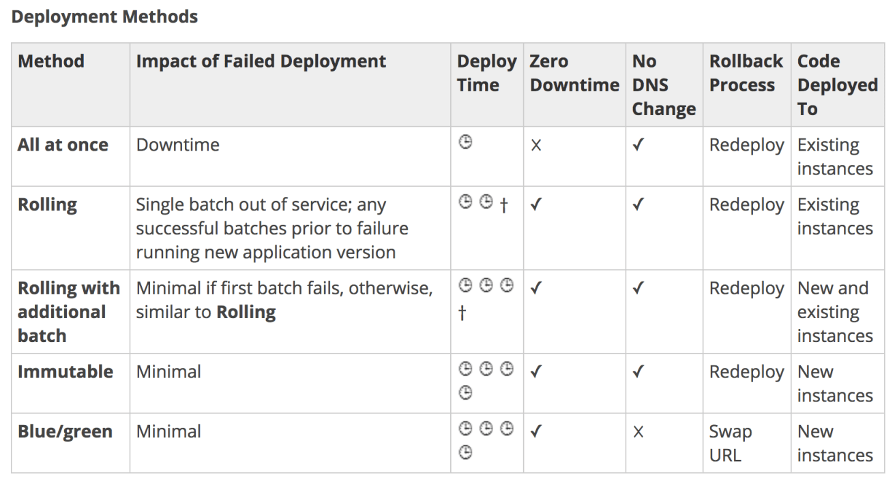

Test Report
Review questions
Jun 17, 2019 03:58AM EDT
 9 correct
9 correct 56 incorrect
56 incorrectYour answer
B. AWS Directory Service Simple AD
C. AWS Identity and Access Management groups
D. AWS Identity and Access Management roles
E. AWS Identity and Access Management users
D. AWS Identity and Access Management roles
Correct answers are A & D as AD connector is required to connect to on-premises Active Directory and IAM Role can be used for Identity Provider and Federation.
Refer AWS blog - How to connect on-premises active directory using AD Connector
AD Connector is a directory gateway with which you can redirect directory requests to your on-premises Microsoft Active Directory without caching any information in the cloud
Your end users and IT administrators can use their existing corporate credentials to log on to AWS applications such as Amazon WorkSpaces, Amazon WorkDocs, or Amazon WorkMail.
You can manage AWS resources like Amazon EC2 instances or Amazon S3 buckets through IAM role-based access to the AWS Management Console.
Option B is wrong as Simple AD is a standalone AD setup and does not allow connection to the on-premises AD.
Option C & E are wrong as users and groups do not work.
Your answer
B. Use Amazon CloudFront in front of RDS
C. Use Amazon ElastiCache in front of RDS
D. Use Amazon DynamoDB to store the most queried information
Correct answer is C as ElastiCache integrates seamlessly with RDS and can help cache the results from database for the repeated queries and reduce the load on the RDS instance.
Refer AWS Storage Options Whitepaper
ElastiCache improves application performance by storing critical pieces of data in memory for low-latency access. It is frequently used as a database front end in read-heavy applications, improving performance and reducing the load on the database by caching the results of I/O-intensive queries. It is also frequently used to manage web session data, to cache dynamically generated web pages, and to cache results of computationally-intensive calculations, such as the output of recommendation engines. For applications that need more complex data structures than strings, such as lists, sets, hashes, and sorted sets, the Redis engine is often used as an in-memory NoSQL database.
Option A is wrong as Redshift is a fast and scalable data warehouse that makes analyzing your entire data data simple and cost-effective throughout your data warehouse and data lake.
Option B is wrong as CloudFront does not support RDS as origin.
Option D is wrong as DynamoDB is a non-relational database for applications that require high performance on various scales and is not suitable for caching query results.
Your answer
B. Launch a NAT gateway in the public subnet and add a route to it from the private subnet.
C. Launch Amazon EC2 instances in the public subnet and change the security group to allow outbound traffic on port 80
D. Launch a NAT gateway in the private subnet and deploy a NAT instance in the private subnet.
Correct answer is B as to access internet for instances in private subnet, a NAT Gateway must be launched in the public subnet with the traffic routed through it.
Refer AWS documentation - VPC NAT
You can use a NAT device to enable instances in a private subnet to connect to the Internet (for example, for software updates) or other AWS services, but prevent the Internet from initiating connections with the instances. A NAT device forwards traffic from the instances in the private subnet to the Internet or other AWS services, and then sends the response back to the instances. When traffic goes to the Internet, the source IPv4 address is replaced with the NAT device’s address and similarly, when the response traffic goes to those instances, the NAT device translates the address back to those instances’ private IPv4 addresses.
Option A is wrong as Elastic IP address does not enable traffic routing from private to public subnets.
Option C is wrong as EC2 instances can act as NAT instances, however the source/dest flag needs to be disabled and the traffic routed through these instances.
Option D is wrong as NAT Gateway needs to be launched in public subnet with access to Internet Gateway.
Your answer
B. Amazon ECS does not work with Ubuntu. Only Amazon Linux and Windows instances are supported.
C. The Amazon ECS container agent is not installed and properly configured on the new instances.
D. The instances are of different types. Amazon ECS container instances must all be of the same type.
Correct answer is C as with non ECS Optimized AMIs the ECS container agent is not installed and needs to installed.
Refer AWS documentation - ECS Container launch Instance
Choose an AMI for your container instance. You can choose the Amazon ECS-optimized AMI, or another operating system, such as CoreOS or Ubuntu. If you do not choose the Amazon ECS-optimized AMI, you must follow the procedures in Installing the Amazon ECS Container Agent.
Your answer
B. Immutable deployment
C. Rolling deployment
D. Linear deployment
E. Blue/Green deployment
E. Blue/Green deployment
Correct answer is B & E as immutable and blue/green deployments always deploy the applications on new instances and do not use existing instances.
Refer AWS documentation - Elastic Beanstalk Deployment Strategies

Option A & C are wrong as both of them deploy the application on the existing instances.
Option D is wrong as Linear deployment does not exist for Elastic Beanstalk
Your answer
B. The user should create an IAM role with DynamoDB and EC2 access. Attach the role with EC2 and route all calls from the mobile through EC2
C. The application should use an IAM role with web identity federation which validates calls to DynamoDB with identity providers, such as Google, Amazon, and Facebook
D. Create an IAM Role with DynamoDB access and attach it with the mobile application
Correct answer is C as you can authenticate with any OpenID compliant identity provider and have an IAM role to use temporary credentials.
Option A is wrong as using IAM user which would need hard coding security credentials is not recommended.
Option B is wrong as using EC2 to redirect calls in unnecessary
Option D is wrong as you cannot directly attach a role to the mobile application.
Your answer
B. Create a Lambda function for each Availability Zone the application is deployed in.
C. Enable Multi-AZ on the RDS PostgreSQL database.
D. Create a DynamoDB stream for the DynamoDB table.
Correct answer is C as PostgreSQL is a standalone DB instance and needs High Availability which can be provided by Multi-AZ configuration.
Refer AWS documentation - RDS Multi-AZ
Amazon RDS provides high availability and failover support for DB instances using Multi-AZ deployments. Amazon RDS uses several different technologies to provide failover support. Multi-AZ deployments for Oracle, PostgreSQL, MySQL, and MariaDB DB instances use Amazon's failover technology. SQL Server DB instances use SQL Server Mirroring.
Option A is wrong as S3 provides 99.99% Availability and the data is replicated across multiple facilities.
Option B is wrong as AWS Lambda lets you run code without provisioning or managing servers. You pay only for the compute time you consume - there is no charge when your code is not running. With Lambda, you can run code for virtually any type of application or backend service - all with zero administration. Just upload your code and Lambda takes care of everything required to run and scale your code with high availability. You can set up your code to automatically trigger from other AWS services or call it directly from any web or mobile app.
Option D is wrong as DynamoDB takes away one of the main stumbling blocks of scaling databases: the management of database software and the provisioning of the hardware needed to run it. You can deploy a nonrelational database in a matter of minutes. DynamoDB automatically scales throughput capacity to meet workload demands, and partitions and repartitions your data as your table size grows. Also, DynamoDB synchronously replicates data across three facilities in an AWS Region, giving you high availability and data durability.
Your answer
B. Use Amazon EBS provisioned IOPS
C. Use VPC endpoints for S3
D. Request a service limit increase
Correct answer is C as the internet is being used, it can be avoided using an VPC endpoint which will allow the communication to happen within the AWS network.
VPC endpoints for Amazon S3 can alleviate these challenges. A VPC endpoint for Amazon S3 enables Application to use a private IP addresses to access Amazon S3 with no exposure to the public internet. Application does not require public IP addresses, and you don't need an internet gateway, a NAT device, or a virtual private gateway in your VPC. You use endpoint policies to control access to Amazon S3. Traffic between your VPC and the AWS service does not leave the Amazon network.
Option A is wrong as S3 bucket policy is for access control.
Option B is wrong as EBS provisioned IOPS would help improve the network performance between EC2 instance and EBS volumes.
Option D is wrong as there is no service limit upload.
Your answer
B. Assign an Elastic IP address to the fourth instance
C. Configure a publicly routable IP Address in the host OS of the fourth instance.
D. Modify the routing table for the public subnet.
Correct answer is B as the instance needs to either have a public IP or Elastic IP address to be reachable from internet.
Refer AWS documentation - EC2 Internet Connectivity
Option A is wrong as NAT is for instances in private subnet to reach to internet.
Option C is wrong as this configuration is not valid.
Option D is wrong as 3 instances already can be reached from Internet, the route table, security groups and NACLs are fine.
Your answer
B. Build out additional capacity to ensure there is no scenario in which the application can fail
C. Enable failover to an on-premise data center
D. Use Route 53 and the failover option to failover to a static S3 website bucket or CloudFront distribution in the event of an issue
Correct answer is D as Route 53 can be configured to failover to a static S3 website or CloudFront in case of an issue.
Refer AWS documentation - Knowledge Center Article Route 53 - S3
DNS Failover pairs up well with Amazon S3s website hosting feature to create a simple, low-cost, and reliable way to deploy a backup website. Of course no one wants their site to go down, but things happen, whether due to deploying bad code, network outages, or other issues, and its helpful to have a backup which gives your customers a good experience in the event that your primary website does go down.
Your answer
B. access S3 data using only signed URLs
C. disable S3 delete using an IAM bucket policy
D. enable S3 Reduced Redundancy Storage
E. enable Multi-Factor Authentication (MFA) protected access
Correct answer is A as using Object Versioning. Versioning-enabled buckets enable you to recover objects from accidental deletion or overwrite as it maintains the versions of Objects and can be reverted back to.
Points : 3 out of 3
Your answer
B. Both instances are the same instance class and using the same key-pair.
C. That the default route is set to a NAT instance or Internet Gateway (IGW) for them to communicate.
D. Security groups are set to allow the application host to talk to the database on the right port/protocol
D. Security groups are set to allow the application host to talk to the database on the right port/protocol
Correct answers are A & D as NACLs and Security groups can be configured for the instances to communicate with each other.
Option B is wrong as key pair is to login to the instances and would not allow them to communicate.
Option C is wrong as NAT just allows private instances internet access while IGW will not allow access within the VPC but would be routed through internet
Refer AWS documentation - Web DB using Security Groups
Your answer
B. Set up an ElastiCache in front of the EC2 instance.
C. Set up your web app on more EC2 instances and use Route 53 to route requests accordingly.
D. Set up DynamoDB behind your EC2 Instances.
C. Set up your web app on more EC2 instances and use Route 53 to route requests accordingly.
Correct answers are A & C as multiple EC2 instances can be used to serve the traffic with ELB or Route 53 acting as the interface.
Refer AWS documentation - Route 53 Routing & ELB
If your application is running on Amazon EC2 instances in two or more Amazon EC2 regions, and if you have more than one Amazon EC2 instance in one or more regions, you can use latency-based routing to route traffic to the correct region and then use weighted records to route traffic to instances within the region based on weights that you specify.
For example, suppose you have three Amazon EC2 instances with Elastic IP addresses in the US East (Ohio) region and you want to distribute requests across all three IPs evenly for users for whom US East (Ohio) is the appropriate region. Just one Amazon EC2 instance is sufficient in the other regions, although you can apply the same technique to many regions at once.
Your answer
B. SQS synchronously provides transcoding output.
C. SQS checks the health of the worker instances.
D. SQS helps to facilitate horizontal scaling of encoding tasks
Correct answer is D as SQS allows horizontal scaling depending on the work demand
Refer AWS documentation - SQS Throughput
Your answer
B. Amazon SNS
C. Amazon ECS
D. AWS STS
Correct answer is A as SQS FIFO queues can process the messages in order and can handle 300 messages per second or 3000 messages per second when batched.
Refer AWS documentation - SQS FIFO Queues
FIFO (First-In-First-Out) queues are designed to enhance messaging between applications when the order of operations and events is critical, or where duplicates can't be tolerated, for example:
- Ensure that user-entered commands are executed in the right order.
- Display the correct product price by sending price modifications in the right order.
- Prevent a student from enrolling in a course before registering for an account.
FIFO queues also provide exactly-once processing but have a limited number of transactions per second (TPS):
- By default, FIFO queues support up to 3,000 messages per second with batching. To request a limit increase, file a support request.
- FIFO queues support up to 300 messages per second (300 send, receive, or delete operations per second) without batching.
Option B is wrong as Amazon Simple Notification Service (SNS) is a highly available, durable, secure, fully managed pub/sub messaging service that enables you to decouple microservices, distributed systems, and serverless applications.
Option C is wrong as ECS helps in container orchestration.
Option D is wrong as STS is a security token service to grant temporary credentials
Points : 3 out of 3
Your answer
B. Enable VPC Flow Logs for the production VPC
C. Enable both CloudTrail and VPC Flow Logs for the production VPC
D. Enable both CloudTrail and VPC Flow Logs for the AWS account
Correct answer is B as the VPC flow logs needs to be enabled for tracking the access to EC2 instances.
Refer AWS documentation - VPC Flow Logs
VPC Flow Logs is a feature that enables you to capture information about the IP traffic going to and from network interfaces in your VPC. Flow log data is stored using Amazon CloudWatch Logs. After you've created a flow log, you can view and retrieve its data in Amazon CloudWatch Logs.
Flow logs can help you with a number of tasks; for example, to troubleshoot why specific traffic is not reaching an instance, which in turn can help you diagnose overly restrictive security group rules. You can also use flow logs as a security tool to monitor the traffic that is reaching your instance
Option A, C & D are wrong as CloudTrail would not help capture access to EC2 instances but only the AWS API calls.
Your answer
B. Use Route 53 with the on-premises application as the origin
C. Use Application Load Balancer with the on-premises application as the origin
D. User CloudWatch with the on-premises application as the origin
Correct answer is A as CloudFront can help the cache the contents and deliver low latency for global users. CloudFront also works with on-premises as its origin with original content.
Refer AWS documentation - CloudFront Custom Origins
When you create a web distribution, you specify where CloudFront sends requests for the files. CloudFront supports using several AWS resources as origins. For example, you can specify an Amazon S3 buckets or an AWS Elemental MediaStore container, as well as custom origins, such as an Amazon EC2 instance or your own HTTP web server.
Points : 3 out of 3
Your answer
B. Store all static files in a Multi-AZ Amazon Aurora database
C. Create a CloudFront distribution pointing to static content in Amazon S3
D. Use Amazon Route 53 to route traffic to the correct region
E. Use Amazon S3 multi-part uploads to improve upload times
C. Create a CloudFront distribution pointing to static content in Amazon S3
Correct answer is A & C as ELB with Auto Scaling provides the scaling on demand capability. Caching using CloudFront would help to improve performance and reduce load on the web servers.
Option B is wrong as Aurora is not an ideal storage for static files.
Option D is wrong as Route 53 would help in routing only. It does not help scale or improve performance.
Option E is wrong as S3 multi-uploads only improve upload times and does not help improve web performance.
Your answer
B. Amazon EC2 Elastic Container Service
C. AWS Elastic Beanstalk
D. AWS CloudFormation
Correct answer is C as Elastic Beanstalk would help deploy the application using docker with RDS, without having to manage underlying infrastructure
Refer AWS documentation - Elastic Beanstalk FAQs
AWS Elastic Beanstalk makes it even easier for developers to quickly deploy and manage applications in the AWS Cloud. Developers simply upload their application, and Elastic Beanstalk automatically handles the deployment details of capacity provisioning, load balancing, auto-scaling, and application health monitoring.
Those who want to deploy and manage their applications within minutes in the AWS Cloud. You don’t need experience with cloud computing to get started. AWS Elastic Beanstalk supports Java, .NET, PHP, Node.js, Python, Ruby, Go, and Docker web applications.
AWS Elastic Beanstalk uses proven AWS features and services, such as Amazon EC2, Amazon RDS, Elastic Load Balancing, Auto Scaling, Amazon S3, and Amazon SNS, to create an environment that runs your application. The current version of AWS Elastic Beanstalk uses the Amazon Linux AMI or the Windows Server 2012 R2 AMI.
Option A is wrong as OpsWorks help define stacks for your applications and would scripts to provision the application deployment.
Option B is wrong as EC2 Elastic Container Service provides a orchestration service to scale and support docker, however you are still responsible for deployment and RDS hosting.
Option D is wrong as CloudFormation provides Infrastructure as code and would need provisioning scripts.
Your answer
B. Give him root access to your AWS Infrastructure, because he is an auditor he will need access to every service.
C. Create an IAM user who will have read-only access to your AWS VPC infrastructure and provide the auditor with those credentials.
D. Create an IAM user with full VPC access but set a condition that will not allow him to modify anything if the request is from any IP other than his own.
Correct answer is C as Auditor would only need read only access, so the best approach would be to create an IAM user with Read Only access.
Refer AWS documentation - IAM Best Practices
Option A is wrong as the best practice should be to provide least privilege and administrator access would provide all access to AWS except billing.
Option B is wrong as the root access should never be given.
Option D is wrong as the best practice should be to provide least privilege as required by the user.
Your answer
B. Invite the acquired company's AWS account to join the existing company’s organization using AWS Organizations.
C. Migrate all AWS resources from the acquired company's AWS account to the master payer account of the existing company.
D. Create a new AWS account and set it up as the master payer. Move the AWS resources from both the existing and acquired companies' AWS accounts to the new account.
Correct answer is B as the existing company can be join into existing company using AWS organizations
Refer AWS documentation - AWS Organizations
AWS Organizations helps you manage policies for multiple AWS accounts. With Organizations, you can create groups of accounts, and then attach policies to a group to ensure the correct policies are applied across the accounts. AWS Organizations enables you to set up a single payment method for all the AWS accounts in your organization through consolidated billing.
Your answer
B. Use CloudFront distributions for static content.
C. Block the IPs of the offending websites in Security Groups.
D. Store photos on an EBS volume of the web server.
Correct answer is A as the website can use pre signed urls with limited time access and keep refreshing it, so that other websites cannot access them
Refer AWS documentation - S3 Share Object with PreSigned URL
All objects by default are private. Only the object owner has permission to access these objects. However, the object owner can optionally share objects with others by creating a pre-signed URL, using their own security credentials, to grant time-limited permission to download the objects.
Option B is wrong as CloudFront urls can still be directly accessed.
Option C is not scalable
Option D does not work as storing images on EBS would still need to be exposed.
Points : 3 out of 3
Your answer
B. Add randomness to the key names.
C. Enable Versioning for the S3 bucket.
D. Enable S3 Accelerator
E. Add a CloudFront distribution in front of the bucket.
E. Add a CloudFront distribution in front of the bucket.
Correct answers are B & E as S3 recommends using random prefix for scalability of all requests and if the requests are GET-intensive use CloudFront to cache the requests to reduce load from S3
Refer AWS documentation - S3 Performance
The Amazon S3 best practice guidance given in this topic is based on two types of workloads:
- Workloads that include a mix of request types – If your requests are typically a mix of GET, PUT, DELETE, or GET Bucket (list objects), choosing appropriate key names for your objects ensures better performance by providing low-latency access to the Amazon S3 index. It also ensures scalability regardless of the number of requests you send per second.
- Workloads that are GET-intensive – If the bulk of your workload consists of GET requests, we recommend using the Amazon CloudFront content delivery service.
Your answer
B. Create stateless Lambda functions to ensure Lambda can scale
C. Set Read Execute permissions on the files in the uploaded ZIP to ensure Lambda can execute code on your behalf.
D. Set No permissions on the files in the uploaded ZIP to code is not accessible by anyone
E. Initialize all code at startup irrespective of current event, for Lambda to enforce reusability
C. Set Read Execute permissions on the files in the uploaded ZIP to ensure Lambda can execute code on your behalf.
Correct answers are B & C as the best practice is to create stateless applications and provide read write permissions for Lambda to be able to execute the code.
Refer AWS documentation - Lambda Best Practices
The following are recommended best practices for using AWS Lambda:
- Write your Lambda function code in a stateless style, and ensure there is no affinity between your code and the underlying compute infrastructure.
- Instantiate AWS clients outside the scope of the handler to take advantage of connection re-use.
- Make sure you have set
+rxpermissions on your files in the uploaded ZIP to ensure Lambda can execute code on your behalf. - Lower costs and improve performance by minimizing the use of startup code not directly related to processing the current event.
- Use the built-in CloudWatch monitoring of your Lambda functions to view and optimize request latencies.
- Delete old Lambda functions that you are no longer using.
Your answer
B. Amazon Kinesis Streams
C. Amazon CloudFront
D. Amazon SQS
Correct answer is A as Kinesis Firehose can help in the data ingestion with least management.
Refer AWS documentation - Kinesis Firehose
Amazon Kinesis Data Firehose is a fully managed service for delivering real-time streaming data to destinations such as Amazon Simple Storage Service (Amazon S3), Amazon Redshift, Amazon Elasticsearch Service (Amazon ES), and Splunk. Kinesis Data Firehose is part of the Kinesis streaming data platform, along with Kinesis Streams and Amazon Kinesis Data Analytics. With Kinesis Data Firehose, you don't need to write applications or manage resources. You configure your data producers to send data to Kinesis Data Firehose, and it automatically delivers the data to the destination that you specified. You can also configure Kinesis Data Firehose to transform your data before delivering it.
Points : 3 out of 3
Your answer
B. Generate the reports by querying the synchronously replicated standby RDS MySQL instance maintained through Multi-AZ
C. Launch an RDS Read Replica connected to your Multi AZ master database and generate reports by querying the Read Replica.
D. Generate the reports by querying the ElastiCache database caching tier.
Correct answer is C using Read Replicas
Refer AWS Blog - RDS Read Replica
There are other use cases for a Read Replica beyond increasing effective read traffic capacity. For example, you might want to use a Read Replica for business reporting. This prevents queries by business analysts from impacting the performance of your production DB Instance
Your answer
B. Elastic IP Addresses
C. AWS Direct Connect
D. Amazon VPC virtual private gateway
Correct answer is C
AWS Direct Connect makes it easy to establish a dedicated network connection from your premises to AWS. Using AWS Direct Connect, you can establish private connectivity between AWS and your datacenter, office, or colocation environment, which in many cases can reduce your network costs, increase bandwidth throughput, and provide a more consistent network experience than Internet-based connections.
Refer Direct Connect FAQs
AWS Direct Connect does not involve the Internet; instead, it uses dedicated, private network connections between your intranet and Amazon VPC.
Your answer
B. Assign the IAM role to the running instance.
C. Create an image of the instance, add a new IAM role with the same permissions as the desired IAM role, and deregister the image with the new role assigned.
D. Create an image of the instance, and use this image to launch a new instance with the desired IAM role assigned
Correct answer is B as IAM Role can be attached to an EC2 instance when it is launched or if it is in running or in stopped state.
Refer AWS documentation - IAM Role for EC2
Your answer
B. Establish a VPN connection so your applications can authenticate against your existing on-premises LDAP servers
C. Establish a VPN connection between your data center and AWS. Create a LDAP replica on AWS and configure your application to use the LDAP replica for authentication
D. Create a second LDAP domain on AWS establish a VPN connection to establish a trust relationship between your new and existing domains and use the new domain for authentication
Key point here achieving low latency on-premises LDAP with minimal changes.
Correct answer is C as creating a Real Only Domain Controller (RODC) helps in low latency and minimal setup
Option A is wrong as independent would not work for authentication as it's a separate copy
Option B is wrong as it not a low latency solution
Option D is wrong as setting up a second LDAP domain (Write Domain controllers) requires changes and is not minimal effort
Refer AWS Directory Services Blog
If the VGW used to connect to the On-Premise AD is not stable or has connectivity issues, the following options can be explored
- Simple AD
- least expensive option
- provides a standalone instance for the Microsoft AD in AWS
- No single point of Authentication or Authorization, as a separate copy is maintained
- trust relationships cannot be setup between Simple AD and other Active Directory domains
- Read-only Domain Controllers (RODCs)
- works out as a Read-only Active Directory
- holds a copy of the Active Directory Domain Service (AD DS) database and respond to authentication requests
- are typically deployed in locations where physical security cannot be guaranteed
- they cannot be written to by applications or other servers.
- helps maintain a single point to authentication & authorization controls, however needs to be synced
- Writable Domain Controllers
- are expensive to setup
- operate in a multi-master model; changes can be made on any writable server in the forest, and those changes are replicated to servers throughout the entire forest
Your answer
B. HTTPS
C. SFTP
D. FTP
Correct answer is B as S3 allows using SSL endpoints using the HTTPS protocol to protect data in transit.
Refer AWS documentation - S3 FAQs
You can securely upload/download your data to Amazon S3 via SSL endpoints using the HTTPS protocol. If you need extra security you can use the Server-Side Encryption (SSE) option to encrypt data stored at rest. You can configure your Amazon S3 buckets to automatically encrypt objects before storing them if the incoming storage requests do not have any encryption information. Alternatively, you can use your own encryption libraries to encrypt data before storing it in Amazon S3.
Your answer
B. You need to update your route table so as to provide a route out for this instance.
C. You have not configured a routable IP address in the host OS of the fourth instance.
D. You have not configured a NAT in the public subnet.
Correct answer is A as the instance needs to either have a public IP or Elastic IP address to be reachable from internet.
Refer AWS documentation - EC2 Internet Connectivity
Option A is wrong as 3 instances already can be reached from Internet, the route table, security groups and NACLs are fine.
Option C is wrong as this configuration is not valid.
Option D is wrong as NAT is for instances in private subnet to reach to internet.
Points : 3 out of 3
Your answer
B. Amazon EFS
C. Amazon EBS volumes
D. Amazon EC2 Instance store
Correct answer is B as EFS provides an ability to be shared and mounted across EC2 instances.
Refer AWS documentation - EFS
Amazon EFS provides scalable file storage for use with Amazon EC2. You can create an EFS file system and configure your instances to mount the file system. You can use an EFS file system as a common data source for workloads and applications running on multiple instances.
Option A is wrong as S3 cannot be mounted on EC2 instances
Option C & D are wrong as EBS and Instance store cannot be attached and shared across multiple EC2 instances
Your answer
B. Standard Reserved instances
C. On-Demand Instances
D. Scheduled Reserved Instances
Correct answer is D as Scheduled Reserved Instances are suitable for workloads that do not run continuously but have regular schedule and you only pay for the time that the instances are scheduled.
Refer AWS documentation - EC2 Scheduled Reserved Instances
Scheduled Reserved Instances (Scheduled Instances) enable you to purchase capacity reservations that recur on a daily, weekly, or monthly basis, with a specified start time and duration, for a one-year term. You reserve the capacity in advance, so that you know it is available when you need it. You pay for the time that the instances are scheduled, even if you do not use them.
Scheduled Instances are a good choice for workloads that do not run continuously, but do run on a regular schedule. For example, you can use Scheduled Instances for an application that runs during business hours or for batch processing that runs at the end of the week.
Your answer
B. AWS CloudHSM does not support the processing, storage, and transmission of credit card data by a merchant or service provider, as it has not been validated as being compliant with Payment Card Industry (PCI) Data Security Standard (DSS); hence, you will need to use KMS
C. KMS is probably adequate unless additional protection is necessary for some applications and data that are subject to strict contractual or regulatory requirements for managing cryptographic keys, then HSM should be used
D. It probably doesn't matter as they both do the same thing
Correct answer is C as KMS can work for the requirements and HSM can be used subject to strict regulatory requirements
Refer AWS documentation - CloudHSM
Option B is wrong as AWS CloudHSM supports the processing, storage, and transmission of credit card data by a merchant or service provider, and has been validated as being compliant with Payment Card Industry (PCI) Data Security Standard (DSS)
Your answer
B. Configure S3 to rotate the user’s encryption key at regular intervals
C. Configure S3 to store the user’s keys securely with SSL
D. Keep rotating the encryption key manually at the client side
Correct answer is D as the user should rotate the keys manually
You manage a mapping of which encryption key was used to encrypt which object. Amazon S3 does not store encryption keys. You are responsible for tracking which encryption key you provided for which object.
- If your bucket is versioning-enabled, each object version you upload using this feature can have its own encryption key. You are responsible for tracking which encryption key was used for which object version.
- Because you manage encryption keys on the client side, you manage any additional safeguards, such as key rotation, on the client side.
Refer AWS documentation - S3 SSE
Your answer
B. Amazon Kinesis Firehose and Amazon S3
C. Amazon ECS and Amazon RDS
D. Amazon S3 events and AWS Lambda
Correct answer is B as Kinesis Firehose can help capture the data and store the data into S3 as well as invoke data transformation or Lambda functions to process the data in real time.
Refer AWS documentation - Kinesis Firehose
Amazon Kinesis Data Firehose is a fully managed service for delivering real-time streaming data to destinations such as Amazon Simple Storage Service (Amazon S3), Amazon Redshift, Amazon Elasticsearch Service (Amazon ES), and Splunk. Kinesis Data Firehose is part of the Kinesis streaming data platform, along with Kinesis Data Streams, Kinesis Video Streams, and Amazon Kinesis Data Analytics. With Kinesis Data Firehose, you don't need to write applications or manage resources. You configure your data producers to send data to Kinesis Data Firehose, and it automatically delivers the data to the destination that you specified. You can also configure Kinesis Data Firehose to transform your data before delivering it.

Your answer
B. Use On-demand instances
C. Use Spot instances
D. Use Dedicated Instances
Correct answer is A as for long term use Reserved Instances helps reduce the Total Cost of Ownership (TCO)
Refer AWS documentation - EC2 Reserved Instances
Reserved Instances provide you with a significant discount compared to On-Demand Instance pricing. Reserved Instances are not physical instances, but rather a billing discount applied to the use of On-Demand Instances in your account. These On-Demand Instances must match certain attributes in order to benefit from the billing discount.
Option B is wrong as On-Demand are best suited for low-medium usage of EC2 resources.
Option C is wrong as Spot instances would not provide the durability
Option D is wrong as Dedicated instances are expensive and useful when it is required for resource isolation as a part of compliance and security requirement.
Points : 3 out of 3
Your answer
B. One table, with a primary key that is the concatenation of the sensor ID and timestamp
C. One table for each week, with a primary key that is the concatenation of the sensor ID and timestamp
D. One table for each week, with a primary key that is the sensor ID and a sort key that is the timestamp
Correct answer is D Composite key with Sensor ID and timestamp would help for faster queries
Refer AWS documentation for DynamoDB handling Timeseries data
Option C & D are valid as they are keeping tables for each week. However, with Option C, concatenation will cause queries would be slower
Table should be designed with a composite primary key consisting of Customer ID as the partition key and date/time as the sort key
Option A & B are wrong as One table would not make sense as we need to query only on past week and want data only for 4 weeks. This would impact performance. Also, provisioned throughput consumption is based on the size of the deleted item and its more costly as compared to dropping a table.
Your answer
B. Use S3 client-side encryption
C. Use S3 server-side encryption with Amazon S3 managed keys.
D. Use S3 server-side encryption with AWS KMS managed keys.
E. Use S3 server-side encryption with the company’s own keys imported into AWS KMS
B. Use S3 client-side encryption
Correct answers are A & B as the customer can manage their own keys for encryption using either SSE-C or Client Side Encryption. The keys would be stored within the organization and not exposed to AWS>
Refer AWS documentation - S3 Encryption
Use Server-Side Encryption with Customer-Provided Keys (SSE-C) – You manage the encryption keys and Amazon S3 manages the encryption, as it writes to disks, and decryption, when you access your objects.
Use Client-Side Encryption – You can encrypt data client-side and upload the encrypted data to Amazon S3. In this case, you manage the encryption process, the encryption keys, and related tools.
Option C, D and E are wrong as keys are managed by AWS and need to be stored within AWS.
Your answer
B. ELB’s behavior when sticky sessions are enabled causes ELB to send requests in the same session to the same backend
C. A faulty browser is not honoring the TTL of the ELB DNS name.
D. The web application uses long polling such as comet or websockets. Thereby keeping a connection open to a web server tor a long time
D. The web application uses long polling such as comet or websockets. Thereby keeping a connection open to a web server tor a long time
Correct answers are B & D
Option B is correct as sticky sessions would cause the user to be routed to the same instance.
Option D is correct as using application is using long polling the connection would be open for a long time and served by the same server.
Option A is wrong as its not by default behavior
Option C is wrong as DNS TTL would only impact the ELB instances if scaled and not the EC2 instances to which the traffic is routed. Also, it might a single client issue due to browser caching, however here all the existing customers are facing the issue.
Your answer
B. Configure the database security group to allow database traffic from the application server security group
C. Configure the database subnet network ACL to deny all inbound non-database traffic from the application-tier subnet.
D. Configure the database subnet network ACL to allow inbound database traffic from the application-tier subnet.
Correct answer is B as the database security Group can be configured to allow traffic from the web security group. As the instances are launched using Auto Scaling the IPs would change always.
Option A is wrong as Application IP address is not an ideal option as they would change with Auto Scaling scale out/in actions.
Option C is wrong as ACLs are stateless and the ACLS should be configured on Web and DB subnet to allow outgoing and incoming traffic to each other.
Option D is wrong as ACLs are stateless and need to allow outbound traffic as well.
Your answer
B. Use CloudFront with the S3 bucket as the source.
C. Use API Gateway with S3 bucket as the source.
D. Use AWS Lambda functions to deliver the content to users.
Correct answer is B as CloudFront with S3 as origin can help cache the contents and distribute is a low latency manner globally using the edge locations.
Refer AWS documentation - CloudFront with S3
Amazon CloudFront is a web service that speeds up distribution of static and dynamic web content, such as .html, .css, .js, and image files, to your users. CloudFront delivers your content through a worldwide network of data centers called Edge locations. When a user requests content that you're serving with CloudFront, the user is routed to the Edge location that provides the lowest latency (time delay), so that content is delivered with the best possible performance. If the content is already in the Edge location with the lowest latency, CloudFront delivers it immediately. If the content is not in that Edge location, CloudFront retrieves it from an Amazon S3 bucket or an HTTP server (for example, a web server) that you have identified as the source for the definitive version of your content.
If you store your objects in an Amazon S3 bucket, you can either have your users get your objects directly from S3, or you can configure CloudFront to get your objects from S3 and distribute them to your users.
Using CloudFront can be more cost effective if your users access your objects frequently because, at higher usage, the price for CloudFront data transfer is lower than the price for Amazon S3 data transfer. In addition, downloads are faster with CloudFront than with Amazon S3 alone because your objects are stored closer to your users.
Your answer
B. Use DynamoDB Accelerator
C. Use DynamoDB inbuilt caching
D. Use RDS with ElastiCache instead
Correct answer is B as DynamoDB Accelerator helps provide caching for DynamoDB to give a 10x microseconds performance.
Refer AWS documentation - DynamoDB DAX
Amazon DynamoDB Accelerator (DAX) is a fully managed, highly available, in-memory cache for DynamoDB that delivers up to a 10x performance improvement – from milliseconds to microseconds – even at millions of requests per second. DAX does all the heavy lifting required to add in-memory acceleration to your DynamoDB tables, without requiring developers to manage cache invalidation, data population, or cluster management.
While DynamoDB offers consistent single-digit millisecond latency, DynamoDB + DAX takes performance to the next level with response times in microseconds for millions of requests per second for read-heavy workloads. With DAX, your applications remain fast and responsive, even when a popular event or news story drives unprecedented request volumes your way. No tuning required.
Your answer
B. Protect against IP spoofing or packet sniffing
C. Assure all communication between EC2 instances and ELB is encrypted
D. Install latest security patches on EC2 instances
Correct answer is B as AWS network provides protection against traditional network security issues
- DDOS – AWS uses proprietary DDoS mitigation techniques. Additionally, AWS’s networks are multi-homed across a number of providers to achieve Internet access diversity.
- Man in the Middle attacks – AWS APIs are available via SSL-protected endpoints which provide server authentication
- IP spoofing – AWS-controlled, host-based firewall infrastructure will not permit an instance to send traffic with a source IP or MAC address other than its own.
- Port Scanning – Unauthorized port scans by Amazon EC2 customers are a violation of the AWS Acceptable Use Policy. When unauthorized port scanning is detected by AWS, it is stopped and blocked. Penetration/Vulnerability testing can be performed only on your own instances, with mandatory prior approval, and must not violate the AWS Acceptable Use Policy.
- Packet Sniffing by other tenants – It is not possible for a virtual instance running in promiscuous mode to receive or “sniff” traffic that is intended for a different virtual instance. While you can place your interfaces into promiscuous mode, the hypervisor will not deliver any traffic to them that is not addressed to them. Even two virtual instances that are owned by the same customer located on the same physical host cannot listen to each other’s traffic.
Refer AWS Security Whitepaper
Option A, C & D are user responsibility.
Your answer
B. Attach an IAM user to the Amazon EC2 instance.
C. Create an IAM role with permissions to write to the DynamoDB table.
D. Attach an IAM role to the Amazon EC2 instance.
E. Attach an IAM policy to the Amazon EC2 instance.
D. Attach an IAM role to the Amazon EC2 instance.
Correct answers are C & D as IAM roles are a secured and recommended way to grant access to EC2 instances.
Refer AWS documentation - IAM Best Practices - IAM Role with EC2
Applications that run on an Amazon EC2 instance need credentials in order to access other AWS services. To provide credentials to the application in a secure way, use IAM roles. A role is an entity that has its own set of permissions, but that isn't a user or group. Roles also don't have their own permanent set of credentials the way IAM users do. In the case of Amazon EC2, IAM dynamically provides temporary credentials to the EC2 instance, and these credentials are automatically rotated for you.
When you launch an EC2 instance, you can specify a role for the instance as a launch parameter. Applications that run on the EC2 instance can use the role's credentials when they access AWS resources. The role's permissions determine what the application is allowed to do
Option A is wrong as it is not recommended and secure to store access keys on the EC2 instance
Option B is wrong as IAM user cannot be attached to an EC2 instance
Option E is wrong as IAM policy cannot be attached to an EC2 instance.
Your answer
B. The user needs to decrypt the object using a private key
C. Amazon S3 manages encryption and decryption automatically
D. Amazon S3 provides a server-side key for decrypting the object
Correct answer is C as with S3-SSE, S3 automatically manages the encryption before inserting the object and decryption before the object is read.
Refer AWS documentation - S3 Server Side Encryption
Amazon S3 default encryption provides a way to set the default encryption behavior for an S3 bucket. You can set default encryption on a bucket so that all objects are encrypted when they are stored in the bucket. The objects are encrypted using server-side encryption with either Amazon S3-managed keys (SSE-S3) or AWS KMS-managed keys (SSE-KMS).
When you use server-side encryption, Amazon S3 encrypts an object before saving it to disk in its data centers and decrypts it when you download the objects.
Your answer
B. Model the environment using CloudFormation. Use an EC2 instance running Apache webserver and an open source search application, stripe multiple standard EBS volumes together to store the scanned files with a search index.
C. Use S3 with standard redundancy to store and serve the scanned files. Use CloudSearch for query processing and use Elastic Beanstalk to host the website across multiple Availability Zones.
D. Use a single-AZ RDS MySQL instance to store the search index for the scanned files and use an EC2 instance with a custom application to search based on the index.
Correct answer is C as S3 Standard Redundancy would provide the storage for the files, which can then be indexed using CloudSearch to be searchable.
Refer AWS documentation - S3 Storage Classes & CloudSearch
Amazon CloudSearch is a managed service in the AWS Cloud that makes it simple and cost-effective to set up, manage, and scale a search solution for your website or application.
Amazon CloudSearch supports 34 languages and popular search features such as highlighting, autocomplete, and geospatial search
Option A is wrong as Reduced Redundancy would not an ideal choice for scanned files, as they might not reproducible. Also, commercial search application would not be cost effective
Option B is wrong as EBS striped volumes and custom application would not be cost effective.
Option D is wrong as RDS is not an ideal solution to store files and custom application would not be cost effective to scale.
Your answer
B. Use Classic Load Balancer which supports WebSockets
C. Use Application Load Balancer which supports WebSockets
D. Use Classic Load Balancer and enable comet support
Correct answer is C as ALB, unlike Classic Load Balancer, supports WebSockets
Refer AWS documentation - ELB Application Load Balancer
WebSockets Support - WebSockets allows a server to exchange real-time messages with end-users without the end users having to request (or poll) the server for an update. The WebSockets protocol provides bi-directional communication channels between a client and a server over a long-running TCP connection.
Your answer
B. Change the EIP (Elastic IP Address) of the NAT instance in the web tier subnet and update the Main Route table with the new EIP
C. Create 15 Security Group rules to block the attacking IP addresses over port 80
D. Create an inbound NACL (Network Access control list) associated with the web tier subnet with deny rules to block the attacking IP addresses
Correct answer is D as NACL can be used to deny access to the attacking IP address.
Refer AWS documentation - VPC NACLs
Option A is wrong as Route table cannot help block traffic but just define routes for traffic.
Option B is wrong as NAT is only for routing outgoing traffic and not incoming traffic.
Option C is wrong as Security Groups cannot help block/deny access.
Your answer
B. Use Server-Side Encryption for S3.
C. Use IOPS Volumes when working with EBS Volumes on EC2 Instances.
D. Use IAM policies with least privilege to control access to EC2 Instances
E. Use SSL/HTTPS when using the Elastic Load Balancer.
F. Disable sticky session on ELB
B. Use Server-Side Encryption for S3.
E. Use SSL/HTTPS when using the Elastic Load Balancer.
Correct answers are A, B & E as Data at Rest security can be provided using encryption on EBS and S3 and Data in Transit security can be provided using SSL/HTTPS
Refer AWS Whitepaper - AWS securing data at rest with encryption
Amazon EBS encryption offers you a simple encryption solution for your EBS volumes without the need for you to build, maintain, and secure your own key management infrastructure. When you create an encrypted EBS volume and attach it to a supported instance type, the following types of data are encrypted:
- Data at rest inside the volume
- All data moving between the volume and the instance
- All snapshots created from the volume
Data protection refers to protecting data while in-transit (as it travels to and from Amazon S3) and at rest (while it is stored on disks in Amazon S3 data centers). You can protect data in transit by using SSL or by using client-side encryption. You have the following options of protecting data at rest in Amazon S3.
- Use Server-Side Encryption – You request Amazon S3 to encrypt your object before saving it on disks in its data centers and decrypt it when you download the objects.
- Use Client-Side Encryption – You can encrypt data client-side and upload the encrypted data to Amazon S3. In this case, you manage the encryption process, the encryption keys, and related tools.
You can create a load balancer that uses the SSL/TLS protocol for encrypted connections (also known as SSL offload). This feature enables traffic encryption between your load balancer and the clients that initiate HTTPS sessions, and for connections between your load balancer and your EC2 instances.
Option C is wrong as there is no such thing as IOPS volumes.
Option D is wrong as IAM policies cannot be used to control access to EC2 instances. Its driven through the ssh keys.
Option F is wrong as sticky sessions do not help secure the instances but helps maintain use mapping to an instance
Your answer
B. Amazon S3 Standard Infrequent Access
C. Amazon EFS
D. Amazon S3 Standard
Correct answer is B as S3 Standard Infrequent Access provides a cost effective solution for storage where the requirement for infrequent but immediate access to objects.
Refer AWS documentation - S3 Storage Classes
Amazon S3 Standard-Infrequent Access (S3 Standard-IA) is an Amazon S3 storage class for data that is accessed less frequently, but requires rapid access when needed. S3 Standard-IA offers the high durability, high throughput, and low latency of S3 Standard, with a low per GB storage price and per GB retrieval fee. This combination of low cost and high performance make S3 Standard-IA ideal for long-term storage, backups, and as a data store for disaster recovery.
Option A is wrong as Glacier will not be able to provide immediate access.
Option C is wrong as EFS would not provide a cost effective solution.
Option D is wrong as Standard would work fine, but cost more as compared to S3 IA
Your answer
B. Create a CloudFront distribution for the bucket.
C. Set an S3 bucket policy.
D. Enable IAM Identity Federation
E. Use S3 Virtual Hosting
C. Set an S3 bucket policy.
Correct answers are A & C as the access to S3 can be controlled using Object ACL, Bucket Policy and ACL and IAM only.
Refer to AWS documentation for S3 Access Control
Option B is wrong as CloudFront distribution alone does not help control access and it still needs to restricted using policies
Option D is wrong as IAM identity federation helps authenticate using different identity providers only
Option E is wrong as virtual hosting is just a practice of serving multiple web sites from a single web server
Your answer
B. Offload SELECT queries that can tolerate stale data to READ replica
C. Offload SELECT and UPDATE queries to READ replica
D. Offload SELECT query that needs the most current data to READ replica
Correct answer is B as Read replicas are asynchronously replicated they might have stale data and if the application is fine with it, the SELECT queries can be redirected to the Read Replicas reducing the load on the primary database.
Refer AWS documentation - RDS Read Replicas
Amazon RDS Read Replicas provide enhanced performance and durability for database (DB) instances. This feature makes it easy to elastically scale out beyond the capacity constraints of a single DB instance for read-heavy database workloads. You can create one or more replicas of a given source DB Instance and serve high-volume application read traffic from multiple copies of your data, thereby increasing aggregate read throughput. Read replicas can also be promoted when needed to become standalone DB instances.
Option A is wrong as standby instance is only for failover over and is synchronously replicated always. It cannot handle any traffic.
Option C is wrong as Read replica is a read only copy and cannot handle UPDATE queries.
Option D is wrong as Read replicas do not have the latest current data as they are asynchronously replicated.
Your answer
B. Add the scripts for the installation in the User data section.
C. Create a golden image and then create a launch configuration.
D. Ask the IT operations team to install the software as soon as the instance is launched.
C. Create a golden image and then create a launch configuration.
Correct answers are B & C as the software can either be pre-installed using an AMI, also referred to as golden image, or the software can be installed using user data.
Refer AWS documentation - User Data & AMI
When you launch an instance in Amazon EC2, you have the option of passing user data to the instance that can be used to perform common automated configuration tasks and even run scripts after the instance starts. You can pass two types of user data to Amazon EC2: shell scripts and cloud-init directives.
An Amazon Machine Image (AMI) provides the information required to launch an instance, which is a virtual server in the cloud. You must specify a source AMI when you launch an instance. You can launch multiple instances from a single AMI when you need multiple instances with the same configuration. You can use different AMIs to launch instances when you need instances with different configurations.
Your answer
B. Implement pessimistic concurrency by using a conditional write.
C. Implement optimistic concurrency by locking the item upon read.
D. Implement pessimistic concurrency by locking the item upon read.
Correct answer is A as Optimistic concurrency depends on checking a value upon save to ensure that it has not changed.
Option B & D are wrong as Pessimistic concurrency prevents a value from changing by locking the item or row in the database.
Option C is DynamoDB does not support item locking, and conditional writes are perfect for implementing optimistic concurrency.
Refer AWS documentation - DynamoDB Optimistic Locking
Points : 3 out of 3
Your answer
B. AWS CloudFormation
C. AWS CodeBuild
D. AWS CodeDeploy
Correct answer is B as CloudFormation provide Infrastructure as a Code service
Refer AWS documentation - CloudFormation
AWS CloudFormation is a service that helps you model and set up your Amazon Web Service resources so that you can spend less time managing those resources and more time focusing on your applications that run in AWS. You create a template that describes all the AWS resources that you want (like Amazon EC2 instances or Amazon RDS DB instances), and AWS CloudFormation takes care of provisioning and configuring those resources for you.
Your answer
B. Push web clicks by session to Amazon Kinesis and analyze behavior using Kinesis workers
C. Write click events directly to Amazon Redshift and then analyze with SQL
D. Publish web clicks by session to an Amazon SQS queue and periodically drain these events to Amazon RDS and analyze with SQL
Key point here is real time data capture and analytics
Correct answer is B as Kinesis helps to collect real time data capture and analyze using kinesis workers
Option A is wrong as S3 & EMR is not ideal for real time data ingestion and analytics
Option C is wrong as Redshift is not suitable for real time data ingestion and only allows jdbc/odbc data connection
Option D is wrong as SQS is not ideal for real time data ingestion. Also periodical analytics is not real time to be able to modify the behavior
Your answer
B. Amazon RDS
C. AWS Storage Gateway
D. Amazon S3
Correct answer is D as S3 by default maintains multiple copies of data on multiple devices across multiple AZs and is very cost-effective.
Refer AWS documentation - S3 FAQs
Q: How are Amazon S3 and Amazon S3 Glacier designed to achieve 99.999999999% durability?
Amazon S3 Standard, S3 Standard-IA, and S3 Glacier storage classes redundantly store your objects on multiple devices across a minimum of three Availability Zones (AZs) in an Amazon S3 Region before returning SUCCESS. The S3 One Zone-IA storage class stores data redundantly across multiple devices within a single AZ. These services are designed to sustain concurrent device failures by quickly detecting and repairing any lost redundancy, and they also regularly verify the integrity of your data using checksums.
Options A, B & C are wrong as they do not maintain multiple copies of data and are not cost effective as S3.
Your answer
B. Configure Enhanced Health Reporting
C. Configure Blue-Green Deployments.
D. Configure a Dead Letter Queue
Correct answer is D as Elastic Beanstalk worker environments support SQS dead letter queues, where worker can send messages that for some reason could not be successfully processed. Dead letter queue provides the ability to sideline, isolate and analyze the unsuccessfully processed messages.
Refer AWS Documentation - Elastic Beanstalk SQS
Your answer
B. EBS Throughput Optimized HDD
C. EBS General Purpose SSD
D. EBS Cold HDD
Correct answer is A as EBS Provisioned IOPS SSD supports high IOPS and is ideal for database workloads.
Refer AWS documentation - EBS Volume Types
Provisioned IOPS SSD (io1) volumes are designed to meet the needs of I/O-intensive workloads, particularly database workloads, that are sensitive to storage performance and consistency.

Points : 3 out of 3
Your answer
B. Amazon EFS
C. Amazon EBS
D. Amazon ElastiCache
Correct answer is B as EFS provides the ability to scale on demand, be shared across multiple instances and provide a system interface.
Refer AWS documentation - EFS
Amazon Elastic File System (Amazon EFS) provides simple, scalable, elastic file storage for use with AWS Cloud services and on-premises resources. It is easy to use and offers a simple interface that allows you to create and configure file systems quickly and easily. Amazon EFS is built to elastically scale on demand without disrupting applications, growing and shrinking automatically as you add and remove files, so your applications have the storage they need, when they need it. It is designed to provide massively parallel shared access to thousands of Amazon EC2 instances, enabling your applications to achieve high levels of aggregate throughput and IOPS that scale as a file system grows, with consistent low latencies. As a regional service, Amazon EFS is designed for high availability and durability storing data redundantly across multiple Availability Zones.
When mounted on Amazon EC2 instances, an Amazon EFS file system provides a standard file system interface and file system access semantics, allowing you to seamlessly integrate Amazon EFS with your existing applications and tools. Multiple Amazon EC2 instances can access an Amazon EFS file system at the same time, allowing Amazon EFS to provide a common data source for workloads and applications running on more than one Amazon EC2 instance.
Option A is wrong as S3 does not provide a system interface.
Option C is wrong as EBS cannot be shared across multiple instances and have scaling limitations.
Option D is wrong as ElastiCache is a caching solution.
Your answer
B. Amazon Instance Storage
C. Any of these
D. Amazon EBS
Correct answer is D as EBS is recommended. RDS also uses Amazon Elastic Block Store (Amazon EBS) volumes for database and log storage.
Refer AWS documentation - EBS
Amazon EBS is recommended when data must be quickly accessible and requires long-term persistence. EBS volumes are particularly well-suited for use as the primary storage for file systems, databases, or for any applications that require fine granular updates and access to raw, unformatted, block-level storage
Your answer
B. Amazon EC2 Instance store
C. Amazon SQS
D. Amazon DynamoDB table
Correct answer is D as DynamoDB is an ideal storage option for session data. It supports JSON documents and provides a strongly consistent access to data.
Refer AWS Whitepaper - Storage Options
Amazon DynamoDB has built-in fault tolerance that automatically and synchronously replicates data across three Availability Zones in a region for high availability and to help protect data against individual machine, or even facility failures.
When reading data from DynamoDB, users can specify whether they want the read to be eventually consistent or strongly consistent:
- Eventually consistent reads (the default) – The eventual consistency option maximizes your read throughput. However, an eventually consistent read might not reflect the results of a recently completed write. All copies of data usually reach consistency within a second. Repeating a read after a short time should return the updated data.
- Strongly consistent reads — In addition to eventual consistency, DynamoDB also gives you the flexibility and control to request a strongly consistent read if your application, or an element of your application, requires it. A strongly consistent read returns a result that reflects all writes that received a successful response before the read.
Your answer
B. Enable Automated backups on RDS
C. Use CloudWatch logs to take backup of transaction logs, which can be restored
D. Take frequent snapshots of underlying EBS volumes and store in S3
Correct answer is B as RDS provides automated backup feature which is enabled by default.
Refer AWS documentation - RDS Backups
Amazon RDS creates and saves automated backups of your DB instance. Amazon RDS creates a storage volume snapshot of your DB instance, backing up the entire DB instance and not just individual databases.
Amazon RDS creates automated backups of your DB instance during the backup window of your DB instance. Amazon RDS saves the automated backups of your DB instance according to the backup retention period that you specify. If necessary, you can recover your database to any point in time during the backup retention period.
Option A and D are wrong as you do not have direct access to the RDS instance and the underlying volume.
Option C is wrong as CloudWatch logs backing up transaction logs won't help to restore the database.
Your answer
B. SQS queue
C. EC2 instance
D. DynamoDB table
Correct answer is C as a single EC2 instance is not scalable and the architecture needs to be improved using Auto Scaling to scale up or down as the demand changes.
Option B and D are AWS managed services and scale as per the configuration and demand.
Option A is wrong as Lambda function scales as per the incoming demand.